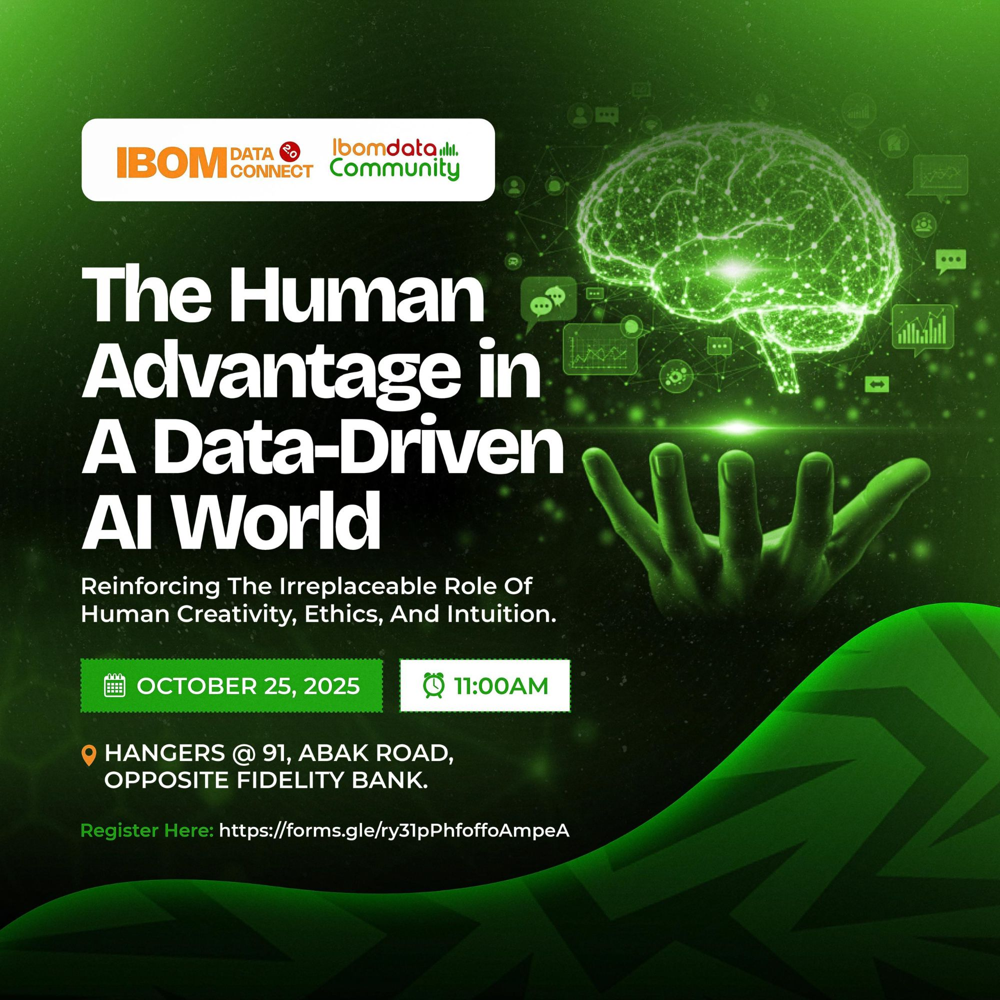
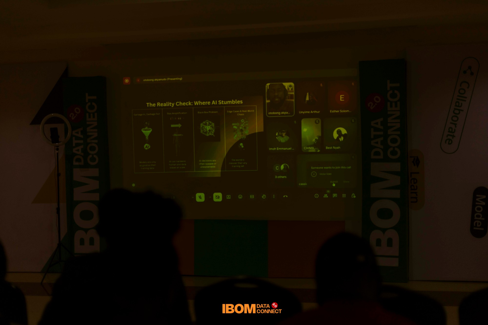
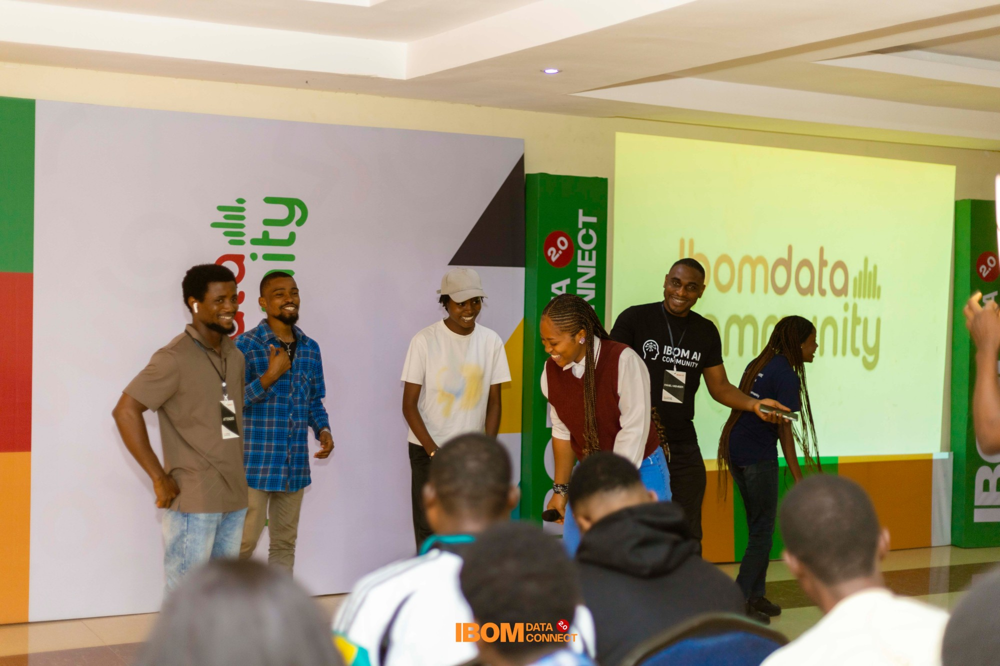
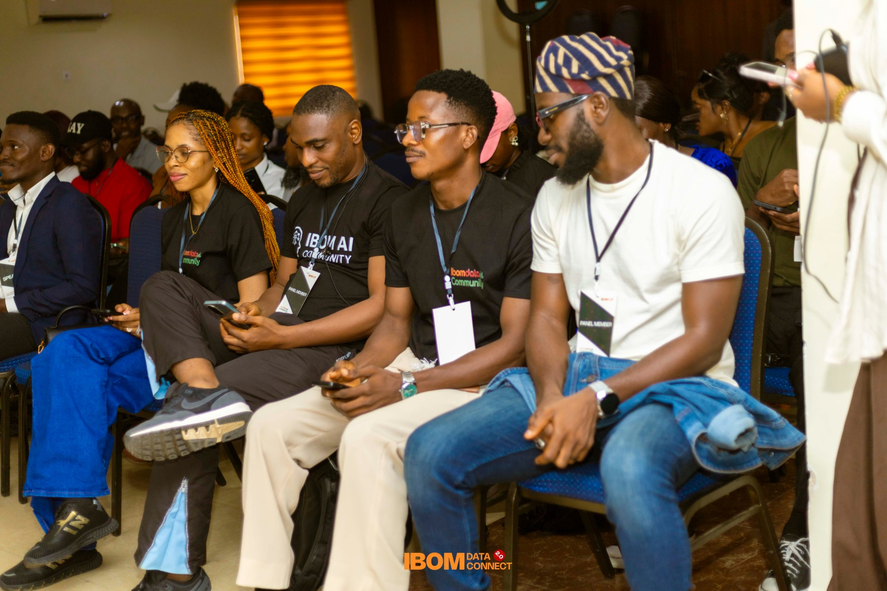
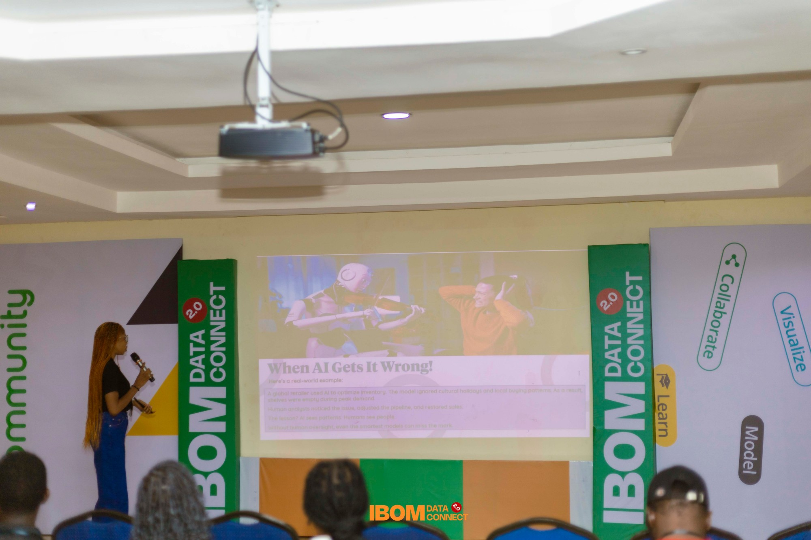
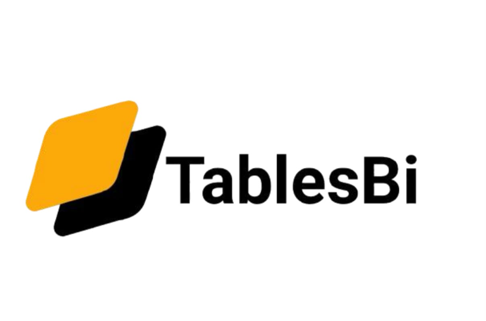
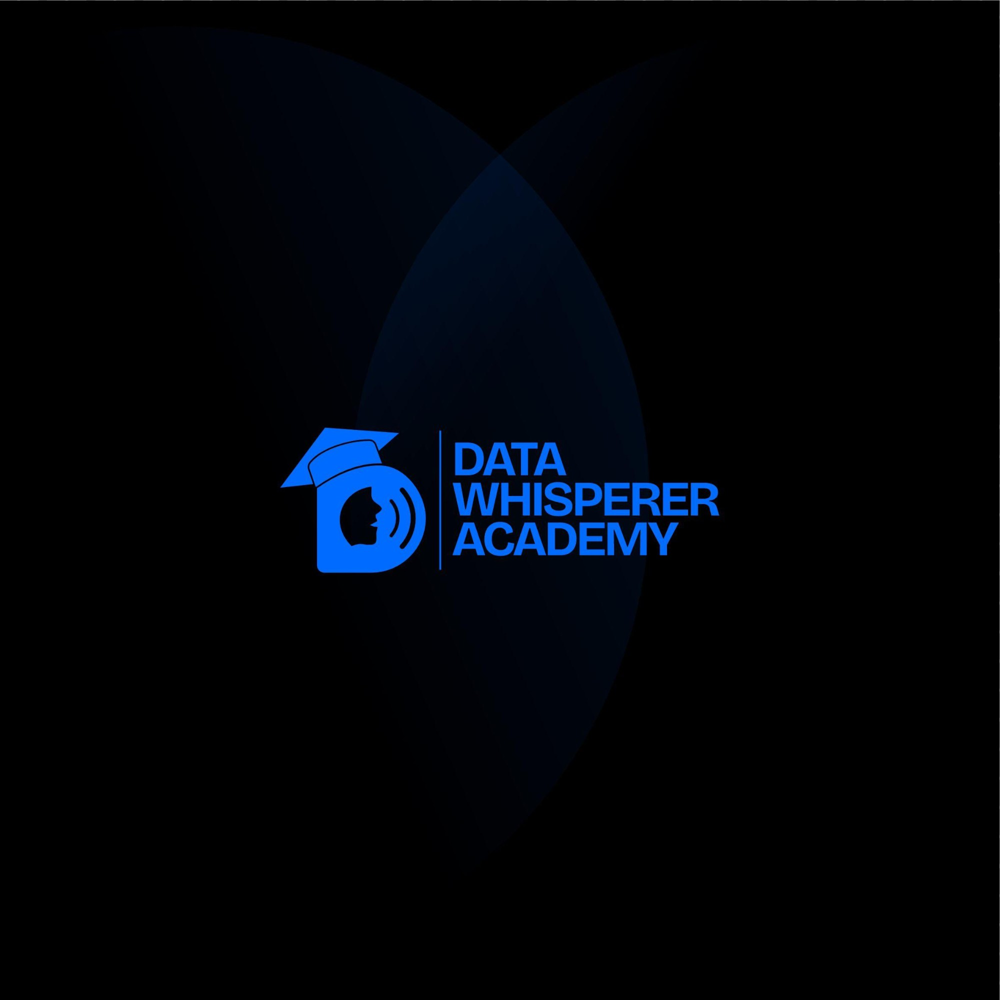

Our second Data Connect brought the community together around data, AI, emerging technologies and the people building with them.
"When machines get smarter, humans must get wiser."

Conversations that shaped Ibom Data Connect 2.0.
Exploring how human ingenuity and creative thinking remain irreplaceable even as AI grows more capable.
How do we build and use AI responsibly? Conversations on bias, fairness, and accountability in data systems.
Why the best decisions combine data-driven insight with human judgment, and how to master both.
A look back at the day, in photos and video.




As part of Ibom Data Connect 2.0, teams competed in the IDC Hackathon, turning real-world data challenges into working solutions. Prizes were awarded to the top three teams.
Ibom Data Connect 2.0 was proudly supported by these organisations.

TablesBI
Data Whisperer AcademyIDC 2.0 brought together speakers, practitioners and learners for a day of ideas on data, AI and the human side of both. Our next chapter, Ibom Data Connect 3.0, is already on the calendar.